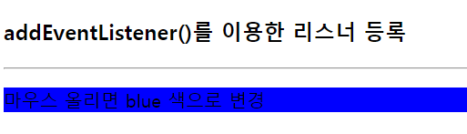
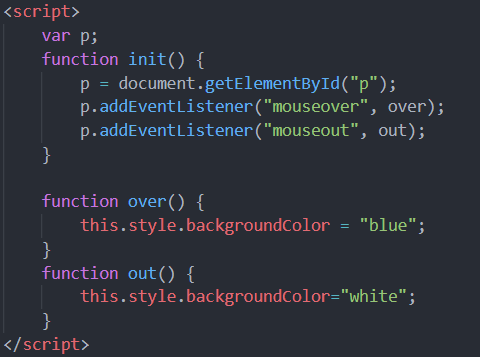

1. 이벤트 개요
- 이벤트
- 사용자의 입력 행위나 문서나 브라우저의 상태 변화를 자바스크립트 코드에게 알리는 통지
- 이벤트 종류
- 마우스/키보드/HTML 프레임/HTML 입력양식/유저인터페이스/구조변화/터치 이벤트 등등 ...
- 용어 정리
<p onclick="f()"> 마우스 클릭시 f 함수 실행</p>
- click : 이벤트 이름, 이벤트 타입
- onclick : 이벤트 속성 (특정 요소에 이벤트를 직접 연결할 때 활용)
- f() : 이벤트 리스너, 이벤트 핸들러(이벤트 속성에 할당한 함수)
2. 이벤트 리스너 만들기
- HTML 태그 내에 작성
- HTML 태그 내의 이벤트 리스너 속성에 이벤트 리스너 직접 작성
- DOM 객체의 이벤트 리스너 프로퍼티에 작성
- DOM 객체의 이벤트 리스너 프로퍼티에 이벤트 리스너 코드 작성
- DOM 객체의 addEventListener() 메소드 이용
- addEventListener() 메소드
addEventListener(eventName, listener[, useCapture])
eventName : 이벤트 타입을 나타내는 문자열 (click, load, keydown)
listener : 이벤트 리스너로 등록할 함수 이름
useCapture : true이면 이벤트 흐름 중 캡쳐 단계에서 실행될 리스너 등록. false이면 버블 단계에서 실행될 리스너 등록. 생략 가능하며 디폴트는 false.
- 동일한 이벤트 리스너에 여러 함수를 중복하여 등록할 수 있다
- 리스너들은 등록된 순서대로 호출됨
3. 이벤트 리스너 작성 방법 3가지 비교
- HTML 태그
<p id ="p" onmouseover=" this.style.backgroundColor='orchid' ">
마우스 올리면 orchid 색으로 변경 </p>
- 이벤트 리스너 프로퍼티
function over(){
p.style.backgroundColor="orchid";
}
p.onmouseover = over;
- addEventListener() 메소드 이용
p.addEventListener("mouseover", over);
4. 예제 ;

- 마우스를 올렸을 때 div 의 색을 파란색으로 바꾸기
예시 코드
